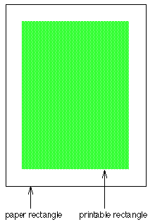
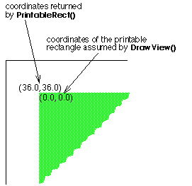

| The Interface Kit Table of Contents | The Interface Kit Index |
Derived from: none
Declared in: be/interface/PrintJob.h
Library: libbe.so
A BPrintJob object runs a printing session. It negotiates everything after the user's initial request to print—from engaging the Print Server to calling upon BViews to draw and spooling the results to the printer. It also handles a secondary and somewhat separate matter related to printing—configuring the page layout.
Users typically don't decide how a document fits on a page— the size of the paper, the width of the margins, the orientation of the image, and so on—each time they print. These decisions are usually made when setting up the document, perhaps from a Page Layout menu item, rather than Print.
To set up the page parameters for a document, an application should create a BPrintJob object, assign it a name, and call ConfigPage():
status_t MyDocumentManager::SetUpPage()
{
BPrintJob job("document");
return job.ConfigPage();
}
ConfigPage() has the Print Server interact with the user to set up the page configuration. Configuration settings are stored in a BMessage object that will be handed to the server when the document is printed. The BMessage is important to the server, but the application doesn't need to look at it directly; functions are provided to access the useful data it contains. However, you may want to get the object and store it with the document so that the configuration can be reused whenever the document is printed—and so that the user's previous choices can be the default settings when ConfigPage() is called again. This is good behavior for an application to follow, and is highly recommended.
Settings() returns the page configuration the user set up; SetSettings() initializes the configuration that's presented to the user. For example:
BMessage *setup;
. . .
status_t MyDocumentManager::SetUpPage() {
status_t result;
BPrintJob job("document>s name");
if (setup) {
job.SetSettings(new BMessage(*setup));
}
result = job.ConfigPage();
if (result == B_OK) {
setup = job.Settings();
/* record the settings for your own use */
paper_rect = job.PaperRect();
printable_rect = job.PrintableRect();
}
return result;
}
In this example, the setup BMessage presumably is flattened and saved with the document whenever the document is saved, and unflattened whenever the document is open and the page settings are needed.
To print a document, an application must go through several ordered steps:
A BPrintJob object has member functions that assist with each step.
A print job begins when the user requests the application to print something. In response, the application should create a BPrintJob object, assign the job a name, and call ConfigJob() to initialize the printing environment. For example:
BMessage *setup;
. . .
status_t MyDocumentManager::Print()
{
BPrintJob job("document");
status_t err;
if ( setup )
job.SetSettings(new BMessage(*setup));
if ( (err = job.ConfigJob()) == B_OK ) {
delete setup;
setup = job.Settings();
}
. . .
}
So far, this looks much like the code for configuring the page presented in the previous "Setting Up the Page Layout" section. The idea is the same. ConfigJob() gets the Print Server ready for a new printing session and has it interact with the user to set up the parameters for the job—which pages, how many copies, and so on. It uses the same settings BMessage to record the user's choices as ConfigPage() did, though it records information that's more immediate to the particular printing session.
Again, you may want to store the user's choices with the document so that they can be used to set the initial configuration for the job when the document is next printed. By calling Settings(), you can get the job configuration the user set up; SetSettings() initializes the configuration that's presented to the user.
Information about the page layout will be required while printing. If that information isn't available in the Settings() BMessage, ConfigJob() will begin, in essence, by calling ConfigPage() so that the server can ask the user to supply it.
To discover which pages the user wants to print, you can call the FirstPage() and LastPage() functions after ConfigJob() returns:
int32 pageCount = job.LastPage() - job.FirstPage() + 1;
The next step after configuring the job is to call BeginJob() to set up a spool file and begin the production of pages. After all the pages are produced, CommitJob() is called to commit them to the printer.
job.BeginJob(); /* draw pages here */ job.CommitJob();
BeginJob() and CommitJob() bracket all the drawing that's done during the job.
A number of things can happen to derail a print job after it has started—most significantly, the user can cancel it at any time. To be sure that the job hasn't been canceled or something else hasn't happened to defeat it, you can call CanContinue() at critical junctures in your code. This function will tell you whether it's sensible to continue with the job. In the following example, a while loop is used to loop through all the pages in the document, or until CanContinue() returns false, indicating that the job has been canceled:
job.BeginJob();
while (job.CanContinue() && page <= pageCount) {
/* draw each page here */
page++;
}
job.CommitJob();
A page is produced by asking one or more BViews to draw within a rectangle that can be mapped to a sheet of paper (excluding the margins at the edge of the paper). DrawView() requests one BView to draw some portion of its data and specifies where the data should appear on the page. You can call DrawView() any number of times for a single page to ask any number of BViews to contribute to the page. After all views have drawn, SpoolPage() spools the data to the file that will eventually be committed to the printer. SpoolPage() is called just once for each page. For example:
for (int i = job.FirstPage(); job.CanContinue() && i <= job.LastPage(); i++) {
. . .
job.DrawView(someView, viewRect, pointOnPage);
job.DrawView(anotherView, anotherRect, differentPoint);
. . .
job.SpoolPage();
}
DrawView() calls the BView's Draw() function. That function must be prepared to draw either for the screen or on the printed page. It can test the destination of its output by calling the BView IsPrinting() function.
|
This function puts together all the above code snippets and handles the printing of a document (minus the actual drawing and visual status information presented to the user as printing goes on).
status_t MyDocumentManager::Print() {
status_t result = B_OK;
BPrintJob job("document>s name");
// If we have no setup message, we should call ConfigPage()
// You must use the same instance of the BPrintJob object
// (you can>t call the previous "PageSetup()" function, since it
// creates its own BPrintJob object).
if (!setup) {
result = job.ConfigPage();
if (result == B_OK) {
// Get the user Settings
setup = job.Settings();
// Use the new settings for your internal use
paper_rect = job.PaperRect();
printable_rect = job.PrintableRect();
}
}
if (result == B_OK) {
// Setup the driver with user settings
job.SetSettings(setup);
result = job.ConfigJob();
if (result == B_OK) {
// WARNING: here, setup CANNOT be NULL.
if (setup == NULL) {
// something's wrong, handle the error and bail out
}
delete setup;
// Get the user Settings
setup = job.Settings();
// Use the new settings for your internal use
// They may have changed since the last time you read it
paper_rect = job.PaperRect();
printable_rect = job.PrintableRect();
// Now you have to calculate the number of pages
// (note: page are zero-based)
int32 firstPage = job.FirstPage();
int32 lastPage = job.LastPage();
// Verify the range is correct
// 0 ... LONG_MAX -> Print all the document
// n ... LONG_MAX -> Print from page n to the end
// n ... m -> Print from page n to page m
if (lastPage > your_document_last_page)
last_page = your_document_last_page;
int32 nbPages = lastPage - firstPage + 1;
// Verify the range is correct
if (nbPages <= 0)
return B_ERROR;
// Now you can print the page
job.BeginJob();
// Print all pages
bool can_continue = job.CanContinue();
for (int i=firstPage ; can_continue && i<=lastPage ; i++) {
// Draw all the needed views
job.DrawView(someView, viewRect, pointOnPage);
job.DrawView(anotherView, anotherRect, differentPoint);
// If the document have a lot of pages, you can update a BStatusBar, here
// or else what you want...
update_status_bar(i-firstPage, nbPages);
// Spool the page
job.SpoolPage();
// Cancel the job if needed.
// You can for exemple verify if the user pressed the ESC key
// or (SHIFT + >.>)...
if (user_has_canceled)
{
// tell the print_server to cancel the printjob
job.CancelJob();
can_continue = false;
break;
}
// Verify that there was no error (disk full for
exemple)
can_continue = job.CanContinue();
}
// Now, you just have to commit the job!
if (can_continue)
job.CommitJob();
else
result = B_ERROR;
}
}
return result;
}
When a BView draws for the printer, it draws within the printable rectangle of a page—a rectangle that matches the size of a sheet of paper minus the unprinted margin around the paper's edge. The PaperRect() function returns a rectangle that measures a sheet of paper and PrintableRect() returns the printable rectangle, as illustrated in this diagram.

Both rectangles are stated in a coordinate system that has its origin at the left top corner of the page. Thus, the left and top sides of the rectangle returned by PaperRect() are always 0.0. PrintableRect() locates the printable rectangle on the paper rectangle. However, DrawView() assumes coordinates that are local to the printable rectangle—that is, an origin at the left top corner of the printable rectangle rather than the paper rectangle.
The diagram below shows the left top coordinates of the printable rectangle as PrintableRect() would report them and as DrawView() would assume them, given a half-inch margin.

Draw() always draws in the BView's own coordinate system. Those coordinates are mapped to locations in the printable rectangle as specified by the arguments passed to DrawView().
See also: BView::IsPrinting()
|
Initializes the BPrintJob object and assigns the job a name. The Print Server isn't contacted until ConfigPage() or ConfigJob() is called. The spool file isn't created until BeginJob() prepares for the production of pages.
See also: ConfigJob(), BeginJob()
|
Frees all memory allocated by the object.
|
Opens a spool file for the job and prepares for the production of a series of pages. Call this function only once per printing session—just after initializing the job and just before drawing the first page.
See also: CommitJob(), "The Spool File" in the class overview
|
Cancels the print job programmatically and gets rid of the spool file. The job cannot be restarted; you must destroy the BPrintJob object. Create a new object to renew printing.
|
Returns true if there's no impediment to continuing with the print job, and false if the user has canceled the job, the spool file has grown too big, or something else has happened to terminate printing. It's a good idea to liberally sprinkle CanContinue() queries throughout your printing code to make sure that the work you're about to do won't be wasted.
See also: "Cancellation" in the class overview
|
Commits all spooled pages to the printer. This ends the print job; when CommitJob() returns, the BPrintJob object can be deleted. CommitJob() can be called only once per job.
See also: BeginJob(), "The Spool File" in the class overview
|
These functions contact the Print Server and have the server interact with the user to lay out the document on a page (in the case of ConfigPage()) or to define a print job (in the case of ConfigJob()). The page layout includes such things as the orientation of the image (portrait or landscape), the dimensions of the paper on which the document will be printed, and the size of the margins. The job definition includes such things as which pages are to be printed and the number of copies.
Both functions record the user's choices in a BMessage object that Settings() returns.
If SetSettings() has been called to establish a default configuration for the page layout or the job, these functions will pass it to the Print Server so the server can present it to the user. Otherwise, the server will choose a default configuration to show the user.
These two functions return status_t error codes, despite having return values that are declared int32. They return B_ERROR if they have trouble communicating with the server or if the job can't be established for any reason. They return B_OK if all goes well.
See also: SetSettings(), "Setting Up the Page Layout" and "Setting Up a Print Job" in the class overview
|
DrawView() calls upon a view to draw the rect portion of its display at point on the page. As a result, the view's Draw() function will be called with rect passed as the update rectangle. The rectangle should be stated in the BView's coordinate system. The point should be stated in a coordinate system that has the origin at the top left corner of the printable rectangle. Together the rect and point should be fashioned so that the entire rectangle lies within the boundaries of the page's printable area.
The view must be attached to a window; that is, it must be known to the Application Server. However, when printing, a BView can be asked to draw portions of its display that are not visible on-screen. Its drawing is not limited by the clipping region, its bounds rectangle, or the frame rectangles of ancestor views.
DrawView() doesn't look down the view hierarchy; it asks only the named view to draw, not any of its children. However, any number of BViews can draw on a page if they are subjects of separate DrawView() calls.
After all views have drawn and the page is complete, SpoolPage() adds it to the spool file.SpoolPage() must be called once to terminate each page.
|
See also: PrintableRect(), BView::Draw(), "Drawing on the Page" in the class overview
|
These functions return the first and last pages that should be printed as part of the current job. If the pages are not set (for example, if the current job has been canceled), FirstPage() returns 0 and LastPage() returns a very large number (LONG_MAX).
|
PaperRect() returns a rectangle that records the presumed size of the paper that the printer will use. Its left and top sides are at 0.0, so its right and bottom coordinates reflect the size of a sheet of paper. The size depends on choices made by the user when setting up the page layout.
PrintableRect() returns a rectangle that encloses the portion of a page where printing can appear. It's stated in the same coordinate system as the rectangle returned by PaperRect(), but excludes the margins around the edge of the paper. When drawing on the printed page, the left top corner of this rectangle is taken to be the coordinate origin, (0.0, 0.0).
The "Drawing Coordinates" section in the class overview illustrates these rectangles and their coordinate systems.
See also: DrawView()
|
Returns a code identifying whether the printer is color or black and white. The argument is currently not used.
The return value will be either B_BW_PRINTER or B_COLOR_PRINTER.
|
If an error occurs, this function will return an appropriate error code (for example, if the Print Server isn't running).
|
These functions set and return the group of parameters that define how a document should be printed. The parameters include some that capture the page layout of the document and some that define the current job. They're recorded in a BMessage object that can be regarded as a black box; the data in the message are interpreted by the Print Server and will be documented where the print driver API is documented.
Instead of looking in the Settings() BMessage, rely on BPrintJob functions to provide specific information about the layout and the print job. Currently, there are only two functions—FirstPage() and LastPage(), which return the first and last pages that need to be printed.
Settings() can be called to get the current configuration message, which can then be flattened and stored with the document. You can retrieve it later and pass it to SetSettings() to set initial configuration values the next time the document is printed, as discussed in the "Setting Up the Page Layout" and "Setting Up a Print Job" sections of the class overview.
If the message passed to settings doesn't contain all the information needed to properly configure the print job, the printer add-on being used will either determine appropriate default values or present a configuration dialog box.
SetSettings() assumes ownership of the object it's passed. If your application needs to retain the object, pass a copy to SetSettings():
print_job_object.SetSettings(new BMessage(settings_message));
On the other hand, Settings() transfers ownership of the object it returns to the caller; you don't need to make a copy.
IsMessageSettingsValid() returns true if the specified message is a valid settings message; otherwise it returns false.
See also: ConfigPage()
| The Interface Kit Table of Contents | The Interface Kit Index |
Copyright © 2000 Be, Inc. All rights reserved..